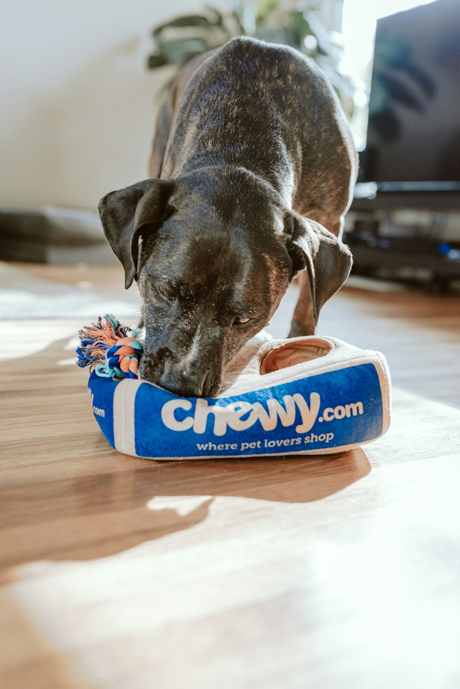

Sobre a ONG
Somos 35 voluntários, uma sede emprestada na Lagoinha e uma rede de lares temporários espalhada pela cidade.
Como começou
Em 2018, a Ana encontrou seis filhotes numa caixa de papelão na porta de casa. Ela e três amigos dividiram os cuidados, pagaram a castração do próprio bolso e acharam lar para todos em dois meses.
Depois disso os pedidos de ajuda não pararam. A PetMatch virou ONG em 2019 e, desde então, já entregou 1.240 animais para adoção.
A gente não tem canil. Cada animal fica numa casa de voluntário até ser adotado, o que ajuda a saber como ele se comporta no dia a dia e a indicar a família certa.

O que fazemos
- Resgate
- Recolhemos animais abandonados ou em situação de maus-tratos denunciados pela vizinhança.
- Lar temporário
- Voluntários recebem o animal em casa enquanto ele se recupera e espera adoção.
- Castração
- Todo animal é castrado antes de ser adotado. Fazemos mutirões abertos à comunidade duas vezes por ano.
- Acompanhamento
- Ligamos para a família depois de 30 e de 90 dias para saber como o pet está.
Dá para ajudar sem adotar
- PIX para pix@petmatch.org. Cada R$ 60 pagam uma vacina V10.
- Ração para filhotes e areia para gatos podem ser entregues na sede de terça a sábado.
- Ser lar temporário: a ONG paga a ração e o veterinário, você dá o espaço.
Quem coordena
- Ana Costa Fundadora
- Rafael Melo Veterinário voluntário
- Júlia Santos Adoções e entrevistas
- Pedro Lima Fotos dos pets